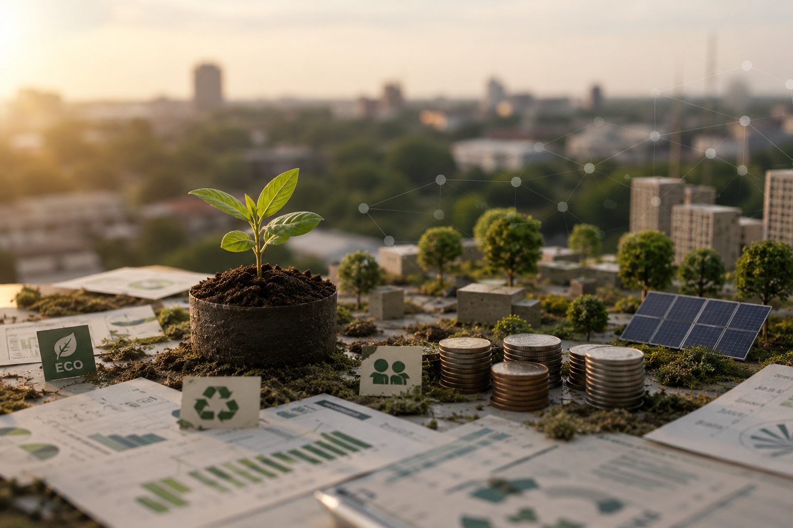
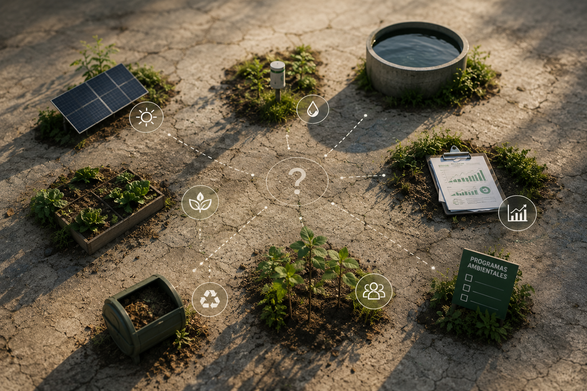
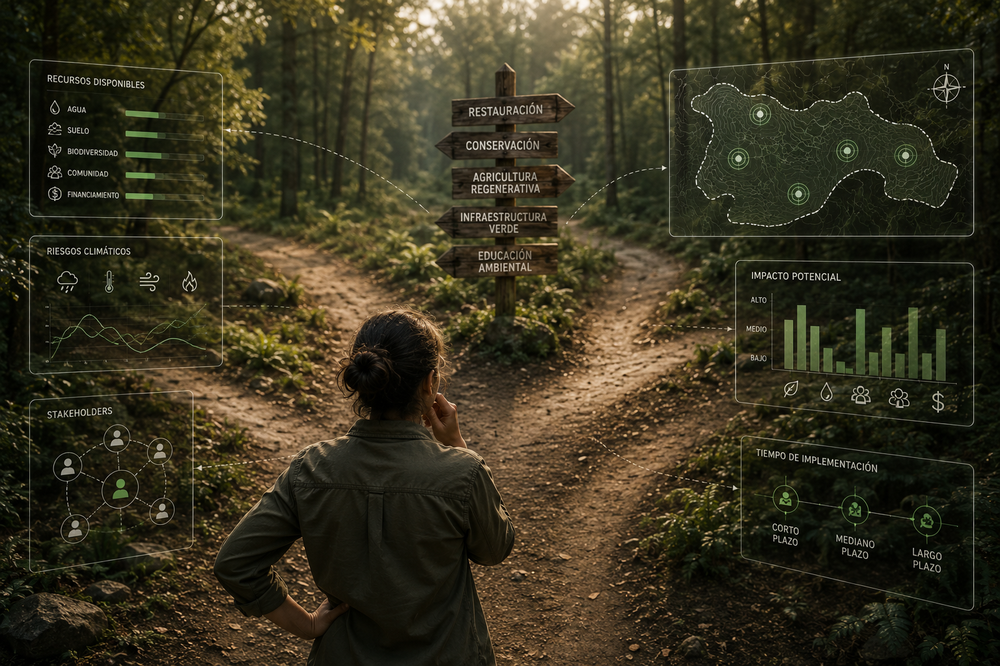
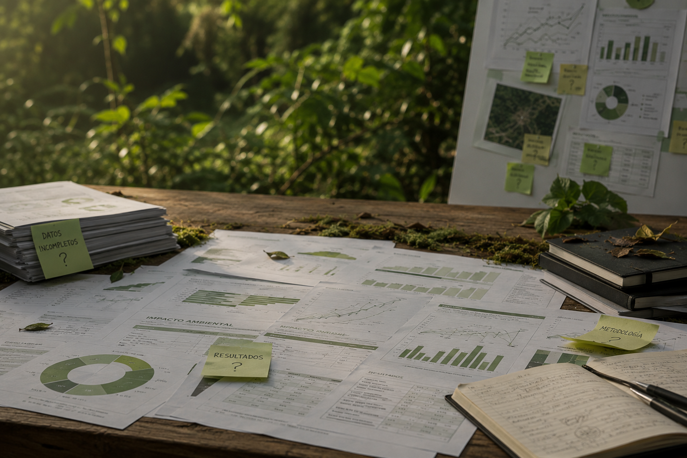
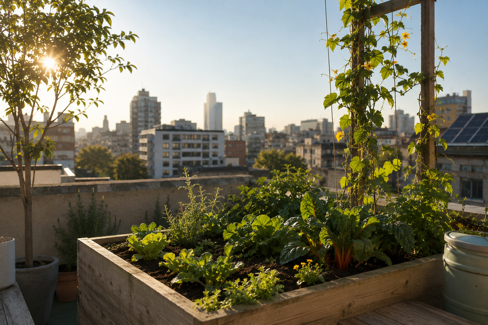

Muchos proyectos sostenibles
no logran el impacto que esperan
Las organizaciones quieren hacer las cosas bien, pero se enfrentan a los mismos obstáculos que consumen recursos, tiempo y oportunidades.

Inversiones que
no generan impacto
Se invierte en soluciones "verdes" sin entender realmente qué necesita el espacio ni qué tendrá mayor efecto.
CONSECUENCIAS:- recursos desperdiciados
- baja rentabilidad
- frustración con los resultados

Acciones
desconectadas
Iniciativas sueltas que funcionan como proyectos aislados y no como un sistema que genera cambios reales.
CONSECUENCIAS:- poco impacto real
- baja continuidad
- desgaste de equipos

Falta de claridad
para decidir
Muchas organizaciones quieren avanzar, pero no saben por dónde partir ni qué priorizar.
CONSECUENCIAS:- decisiones lentas
- proyectos detenidos
- oportunidades perdidas

Dificultad para
demostrar resultados
Sin indicadores claros, es difícil justificar inversiones, medir avances y mostrar resultados concretos.
CONSECUENCIAS:- poca credibilidad
- dificultad para acceder a fondos
- iniciativas que pierden apoyo
Espacios poco preparados
para el futuro
Infraestructura y decisiones que no consideran adaptación climática, eficiencia ni regeneración.
CONSECUENCIAS:- mayores costos futuros
- mayor vulnerabilidad
- dependencia de soluciones externas

Convertimos sostenibilidad
en
decisiones
concretas
y medibles
Diseñamos estrategias ecológicas aplicadas que te ayudan a generar impacto real, optimizar recursos y crear espacios más resilientes, saludables y preparados para el futuro.
Transformemos tu espacio en un ecosistema que genera valorPrioridades claras
Definimos qué hacer, por qué y en qué orden para lograr el mayor impacto.
Inversión inteligente
Asignamos tus recursos a lo que realmente genera beneficios.
Menos riesgos, más futuro
Anticipamos riesgos climáticos y operativos para reducir costos y vulnerabilidades.
Resultados que se miden
Indicadores claros para demostrar avances y tomar mejores decisiones.
Espacios que mejoran vidas
Diseñamos entornos más eficientes, saludables y en armonía con la naturaleza.
Acompañamiento continuo
Te guiamos, aprendemos contigo y aseguramos la evolución de tu proyecto.